Vocabulary
Formeln
Bremsweg in Metern
Geschwindigkeit in km/h
10
X
Geschwindigkeit in km/h
10
Gefahrenbremsung (Halbbremsweg)
Geschwindigkeit in km/h
10
X
Geschwindigkeit in km/h
10
/ 2
Reaktionsweg in Metern
vom Erkennen einer Gefahr bis zur Betätigung der Bremse
Geschwindigkeit in km/h
10
X 3
Anhalteweg (Reaktionsweg + Bremsweg)
Geschwindigkeit in km/h
10
X 3 +
Geschwindigkeit in km/h
10
X
Geschwindigkeit in km/h
10
Fliehkraft
Fliehkraft = (Masse x Geschwindigkeit2) / Kurvenradius
если скорость в курве увеличивается в 2 раза, то Fliehkraft увеличивается в 4 раза. Давление в шинах никак не влияет
Abstand
- 15 Meter (Drei Pkw-Längen) im Stadtverkehr
- Halber Tacho (2 Sekunden Abstand) außerhalb geschlossener Ortschaften (Beispiel: Bei 70 km/h muss man 35 Meter Abstand halten)
- Doppelter Abstand: Bei schlechter Sicht oder schlechten Straßenverhältnissen
- 10 метров до знаков, если их будет закрывать моя машина - "Андреас крест", "Halt. Vorfahrt gewähren", "Vorfahrt gewähren" (трусики) и светофор
- 15 метров - при парковке перед и за знаком автобусной остановки (остановку на 3 мин делать можно и ближе)
- 50 метров - мин расстояние до Андреас креста при парковке ВНЕ города
- 5 метров - парковка у (перед) Андреас креста В городе
- Pkw с прицепом если вместе длиннее 7 метров, надо вне городов на дороге с одной полосой для кажд направления держать такую дистанцию от машины впереди, чтобы при обгоне машина могла встроиться передо мной (например 80 км/ч - 80 метров расстояние)
- 18 метров - макс длина комбинации из машины и прицепа
- 5 метров - расстояние перед пешеходным переходом при парковке или остановке
- 8 метров от перекрестка или примыкания нельзя парковаться на правой обочине, если справа Radweg
- 5 метров до и после перекрестка - парковаться, если справа нет Radweg
- Warndreieck - 50 метров в городе, 100 метров на ландштрассе, 150 метров автобан (по дефолту в тесте - 100 метров). если в пределах этого расстояния курва, ставить перед курвой
- 150-250 метров вне города - знак восклицательный в красном треугольнике - ставится за 150-250 метров до места, о котором он предупреждает
- Bahnübergang через 240 метров (3 полоски) - обгонять уже нельзя
- хорошая дорога, хороший обзор - я должна мочь остановиться в пределах зоны видимости
- на узких улицах надо смочь затормозить на половине обозримого пути
- колонна 50 км/ч - расстояние до впереди идущей машины - 15 метров
- 3 метра - расстояние между моей машиной и разделительной полосой (при парковке на обочине)
- 5 м - макс расстояние при буксировании между обеими машинами
Seitenabstand
- 0,5 Meter - Straßenbahnen
- 1 Meter - zweispurigen Fahrzeugen (auch PKW, LKW)
- 1,5 Meter (вне городов 2 метра) - Fußgängern und Zweirädern
- боковое расстояние от ждущего автобуса - 2 метра
Ladung
- 1,5 метра - обозначенный груз может выступать назад над машиной, если ехать дальше 100 км. Меньше 100 км - 3 метра
- Больше 1 метра назад - надо обозначать (минимум флажок 30 на 30 см).
- 1,5 метра над высотой дороги должно висеть такое обозначение. Rückstrahler - höchstens90 cm über der Fahrbahn
- 2,5 метра высота машины - груз может до 50 см выступать вперед над моей машиной
- Если машина ниже 2,5 метра - груз не должен выступать вперед вообще
- груз может выступать вперед над прицепом, но не над моей машиной
- груз, который выступает в сторону более, чем на 40 см за габаритные огни, надо помечать сзади красным светом и спереди белым (в темноте или при плохой видимости)
- Gesamtbreite eines Fahrzeugs mit Ladung maximal 2,55 Meter
- Höhe eines Fahrzeugs mit Ladung maximal 4 Meter
- Dachlast (нагрузка на крышу) - смотреть инструкцию от производителя и общую нагрузку на машину. В техпаспорте (Teil 1) этой инфы может не быть
- Stützlast для прицепа - мин 4% от общей массы. Das maximale Gewicht, das von oben auf die Anhängerkupplung wirken darf
- Maximale Stützlast (max vertical load) meines PKWs - в техпаспорте моей машины (Teil 1) и в Betriebsanleitung
- Zulässige Anhängerlast meines PKWs - Zulassungsbescheinigung Teil 1 meines PKWs
- давление в шинах повышать при сильной загрузке машины
- Ladungssicherung für Pkw: Gepäcknetz, Spanngurt, Anti-Rutschmatte. Никаких Unterlegkeile, это для прицепов! Обязательны для прицепов более 750кг
- Если у загруженного мебелью Kleintransporter поврежден Zugggurt, мне можно продолжать ехать, если я заменил ремень или использовал другие способы закрепления груза
- Груз на крыше - повышенный расход бензина, в курвах сильнее кренит в сторону, повышается чувствительность к боковому ветру
Speed Limits
- 30 км/ч - макс скорость по Fahrradstraße (если есть доп табличка, разрешающая машинам въезд)
- 50 км/ч - снежные цепи лимит
- 50 км/ч по автобану - если видимость меньше 50 метров
- 50 км/ч - дефолтный лимит по городу (если нет других знаков)
- 61 км/ч - мин требуемая скорость на автобанах и крафтфарштрассе (в техпаспорте - не менее 60 км/ч)
- 40 км/ч при въезжании в Kreisverkehr - немного быстровато
- 130 - рекомендованная скорость на автобанах и Kraftfahrstraßen
- 100km/h - Höhstgeschwindigkeit Landstraßen außerorts, außerhalb geschlossenrer Ortschaften auf Straßen mit einem Fahrstreifen für jede Richtung (PKW bis 3,5 t)
- 80 км/ч - вне городов, езда с прицепом
- с временной шиной скорость - макс 80 км/ч, можно ехать до ближайшей мастерской. Дольше нужного с такой шиной не ездить
- Ausfädelungsstreifen - замедляться на нем примерно до 50 км/час, если нет других знаков
- в городе можно ехать по правой полосе быстрее, чем слева (вне города нельзя)
- пересекать велодорожку с шаговой скоростью не обязательно
- если автобус стоит на остановке, но НЕ включена аварийка, до скорости шага снижаться не обязательно
- если аварийка у автобуса на остановке включена, то снижаемся до скорости шага
- Автобус со включенной аварийкой нельзя обгонять, если он еще едет!
- при съезде с автобана надо чекать спидометр, тк можно привыкнуть к высокой скорости и слишком быстро въехать в съезд
- на Einfädelungsstreifen можно ехать быстрее, чем на полосе с постоянным потоком. Если я еду быстрее LKW, то можно ускориться и встроиться перед ним
- если я еду на медленной машине по Landstraße - я могу выехать на Parkstreifen, Seitenstreifen или Haltebucht, чтобы дать меня обогнать более быстрым
Überholen
- Bahnübergang через 240 метров (3 полоски) - обгонять уже нельзя
- на односторонних улицах обгонять можно
- автобус со включенной аварийкой НЕ обгоняем
- у пешеходного перехода уже не обгоняем
- если при обгоне тот, кого мы обгоняем, ускорился, а мы едем и так с максимально допустимой скоростью - придется не продолжать обгон и встроиться обратно за машину справа
- если меня обгоняют - не повышать скорость, ехать максимально правее
- если машина пристроилась сзади во время моего обгона, я продолжаю обгон
- обозримый участок должен быть в 2 раза длиннее, чем путь обгона
- 100км/ч - примерно 400м путь для обгона (до холма тогда должно быть минимум 800м)
- если есть сплошная, но прям рядом с ней вдоль нее на моей полосе нанесена еще и пунктирная разметка - мне можно делать обгон через такую сплошную. Гегенферкеру нельзя (то есть можно тому, с чьей стороны нанесен пунктир)
- через сплошную можно завершить обгон, если ты начал его не там
- обгон Lkw с прицепом - лучше не начинать в непосредственной близости от грузовика, тк хуже обзор
- Lichthupe (мигание дальним) как сигнал обгона вне населенных пунктов - и днём, и ночью
- Hupen перед обгоном можно только ВНЕ городов
- при обгоне с сильным боковым ветром машину может снести в сторону, противоположную от направления ветра, когда она въезжает в ветровую тень от грузовика
- Schwertransport со значком, запрещающим обгон - не обгонять и перестроиться вправо (ехать за ним типа)
- Трамваи можно обгонять только справа! Исключения (когда можно обгонять слева)- Einbahnstraßen и там, где рельсы проложены сильно правее
- Если справа от трамвая пробка, то надо ехать позади трамвая, слева обгонять нельзя (Gegenverkehr)
- Rechts überholen - можно на Einfädelungsstreifen на автобане. В городе - при наличии нескольких полос для каждого направления движения. Также трамваи и поворачивающих налево над обгонять справа
- Rechts überholen на автобане на обычной полосе - можно, только если пробка, и на левой полосе машины либо стоят, либо едут не быстрее 60 км/ч. Если слева машины стоят - можно обгоняь макс со скоростью 20 км/ч. Если слева медленно едут, можно обгонять с разницей, не превышающей 20 км/ч (т.е. максимально 80 км/ч)
- 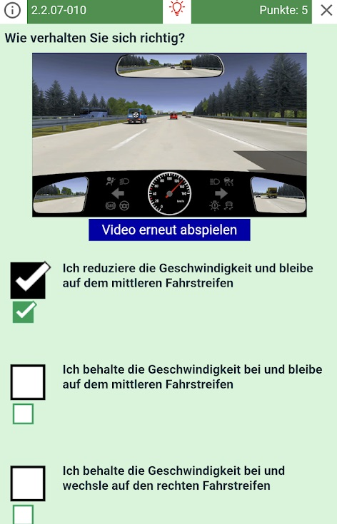 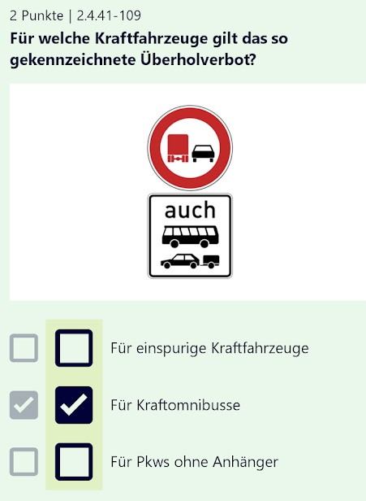 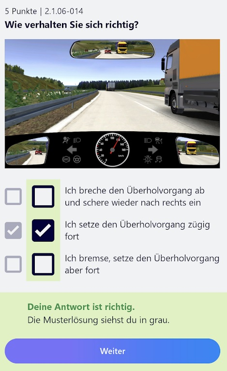 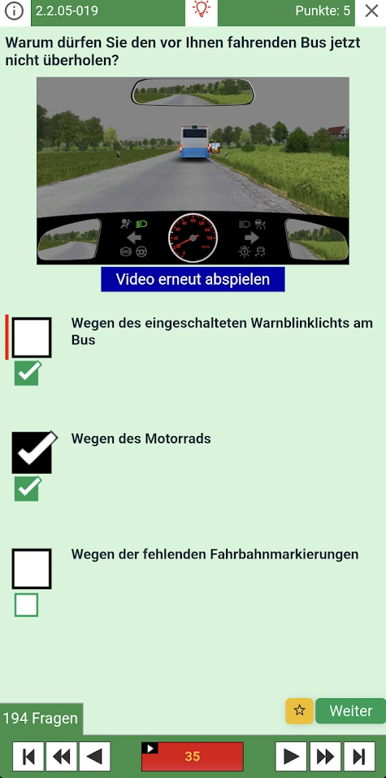 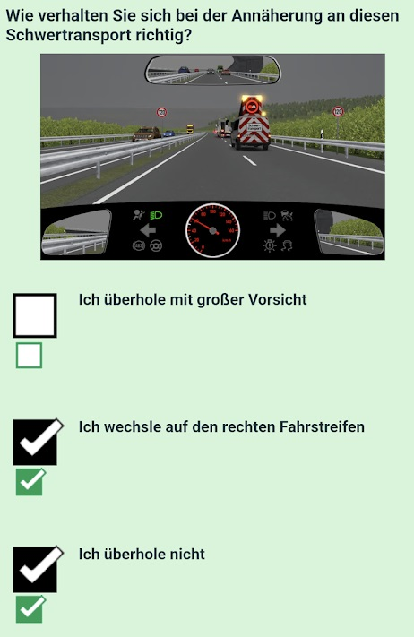
Video:
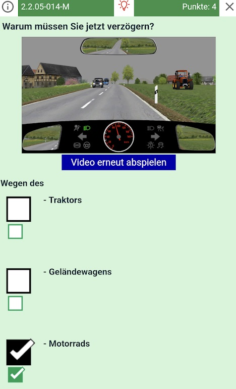Video:
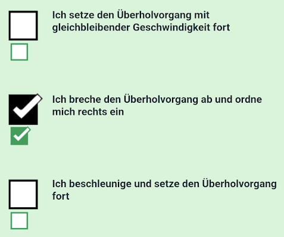Überholwegformel
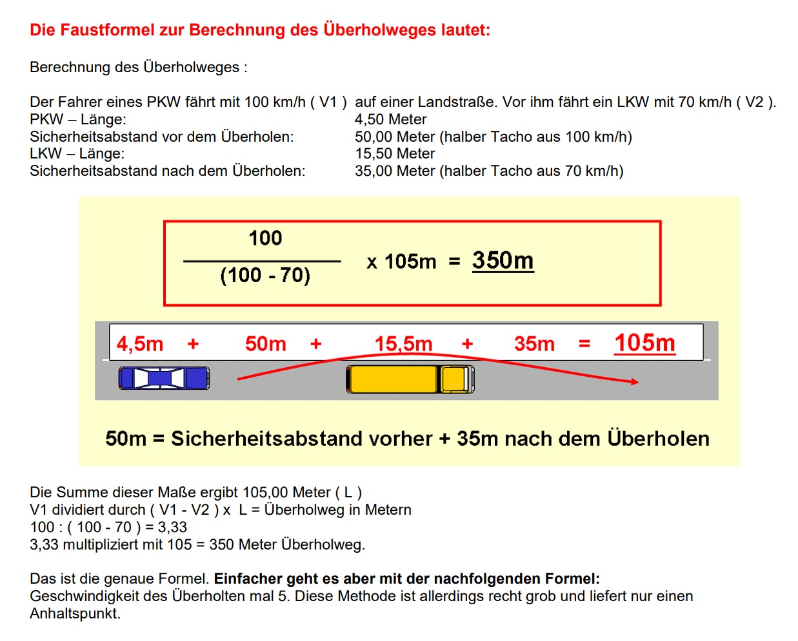Verkehrszeichen und Tafeln
- в городе - свободный выбор обозначенных полос для машин с допустимой массой до 3,5 тонн. По правой полосе можно ехать быстрее, чем по левой
- светофор отменяет действие всех знаков приоритета (включая стоп)
- светофор и рядом с ним нарисованная зелёная стрелка - Всегда сначала останавливаться на хальтлинии!!! даже если нет знака стоп. Но также можно дождаться зелёный свет светофора
- если под нарисованной стрелкой стоит, что только велосипеды, то мне надо ждать зелёный свет, чтобы повернуть
- LPG - liquified petroleum gas (Autogas)
- CNG - Erdgas
- H2 - Wasserstofftankstelle
- Bedarfumleitung auf der Autobahn - U в синем прямоугольнике и номер
- номер автобана - в синем ромбе!!!
- номер съезда с автобана - цифра в синем кружке
- знак P (парковка) с машиной, которая одной стороной стоит на тротуаре - мотоциклам и Wohnwagen там тоже можно парковаться
- доп табличка с велосипедами со стрелками с двух сторон - электророллеры тоже
- табличка Werktags под запретом на парковку и остановку - значит, можно парковаться по воскресеньям и праздничным дням. Суббота - рабочий день
- жёлтый прямоугольный знак с цифрами и черной рамочкой - Bundesstrasse
- конная дорога - другим туда нельзя. Наездники должны ехать там
- знак "скользкая дорога" - не только мокрая может быть, но и грязная
- зоны со спокойным трафиком - надо ехать с шаговой скоростью. Детям можно играть на проезжей части, также на ней могут быть пешеходы
- знак "пешеходная зона" - машинам туда нельзя
- Андреас крест с изогнутой стрелкой - могут быть провода под напряжением
- С трусами уступать дорогу только тем, кто едет по дороге, перпендикулярной моей (у них типа главная, а напротив тоже может стоять знак трусов гегенферкеру)
- Kreisverkehr без знаков приоритета - rechts vor links (часто в жилых районах). При выезде из Kreisverkehr давать дорогу пешеходам и велосипедистам
- Dauerlichtzeichen (стрелки, крестики и тд на электроннлм табло над полосой) - действительны для всех. На этих полосах нельзя делать остановку
- Dauerlichtzeichen крестик - по этой полосе нельзя ехать
- знак сужения дороги справа - гегенферкеру предоставить приоритет
- грузовик в красном кружке - Verbot für Kraftfahrzeuge mit einer zulässigen Gesamtmasse über 3,5 t. Это единственный тип знака, где ограничение по zulässig. Остальные знаки с ограничением по весу, ширине или длине - tatsächlich
- грузовик в красном кружке с ограничением по длине 10 метров - Pkw с жилым прицепом длиннее 10 м или трактору с прицепом длиннее 10 метров тоже туда нельзя
- электророллерам можно ездить по велосипедным дорогам
- Знак ограничение по ширине 2 метра - не ориентироваться на Teil 1, т.к. там не учтена ширина машины вместе с боковыми зеркалами
- машинка в красном кружке - нельзя Pkw и Lkw. Мотоциклам можно
- хальтфербот с табличкой с зачеркнутой машиной на обочине - нельзя парковаться на обочине тоже
- Anlieger frei - гостям жильцов тоже можно
- 2 стрелки (у меня приоритет) - мне можно использовать свой приоритет, если узкий участок свободен
- акульи зубы - Wartepflicht. rechts vor links
- красно-белая табличка на машине - указывает на очень широкую машину или припаркованный в городе прицеп
- Elektrokleinstfahrzeuge - им тоже можно на Fahrradstraße
- у Haltlinie всегда приоритет, даже если есть светофор - т.е. на красном останавливаться на хальтлинии
- Zick-Zack Linien - продлевают, укорачивают или обозначают парк- и хальтферботы. Нельзя делать остановку или парковаться
- обочина außerorts может быть обозначена сплошной линией (Fahrbahnbegrenzung), ее можно пересекать. Нельзя только сплошную, которая разделяет полосы движения
- перед курвой НЕ мигать, если всё равно больше некуда ехать, кроме как в курву. Ехать внутри своей полосы правее
- перед знаком стрелка в синем круге мигать (мне можно ехать только туда, но всё равно надо мигать)
- Наездник на лошади в красном треугольнике - Gefahrstelle im Zusammenhang mit Pferden (не идет речи о Vorrang или о запрете проезда)
- Белый круг в черной рамке зачеркнутый - конец ограничений скорости и запретов на обгон
- Pannenbucht - просто так остановиться отдохнуть или поменяться водителям нельзя
- Baustelle с ограничением скорости (комбинация знаков) - можно ускоряться сразу после проезжания Baustelle (ограничение действует только до конца участка, где ремонт)
- 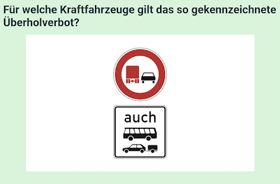 Обгон запрещен для Kraftomnibusse. Машинам без прицепа и einspurige обгонять можно 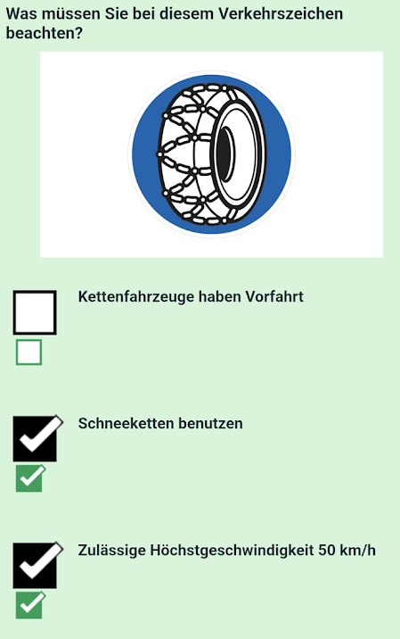 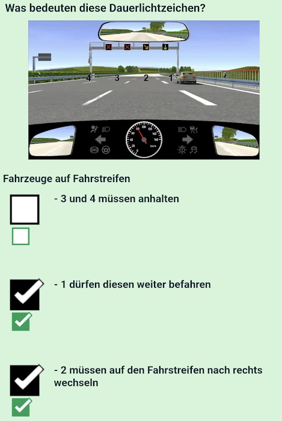 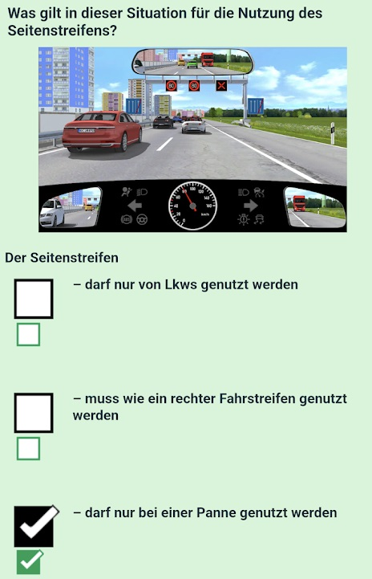 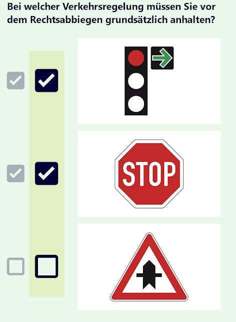 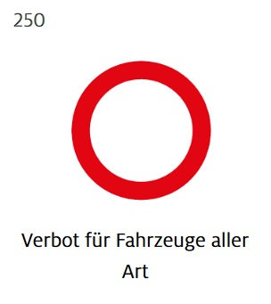 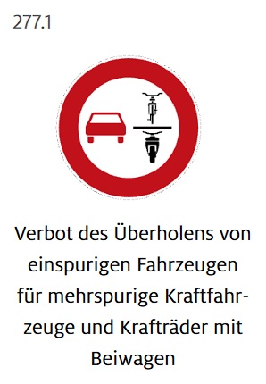 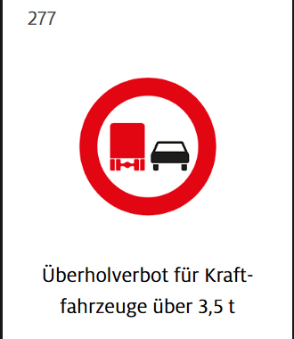 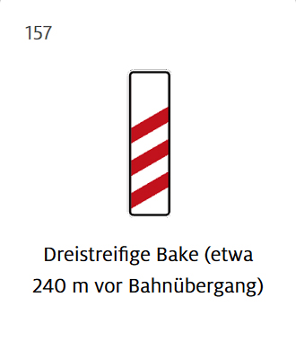 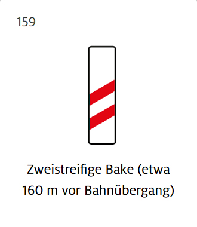 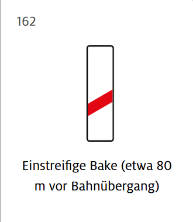 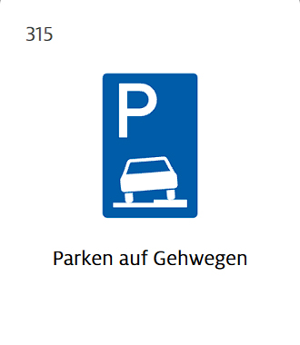 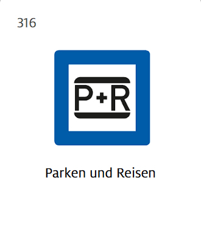 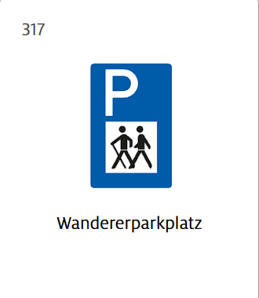 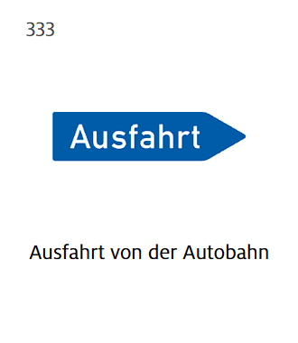
 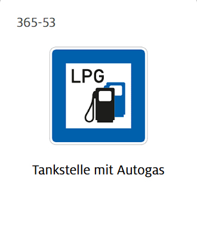
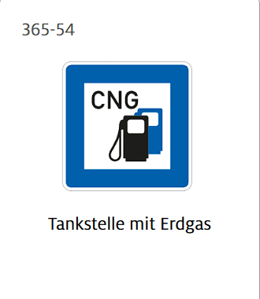
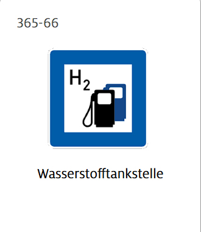
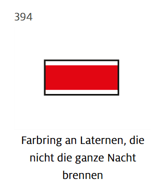
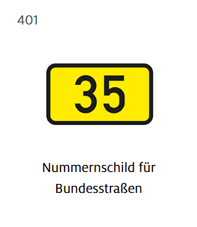
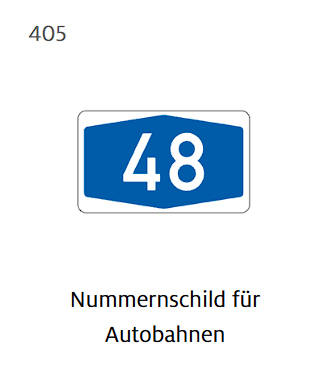
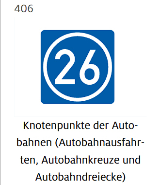
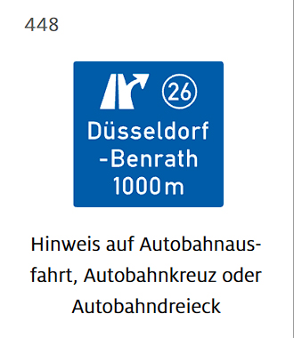
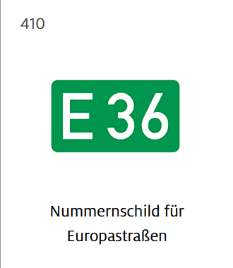
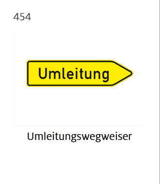
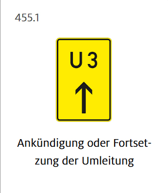
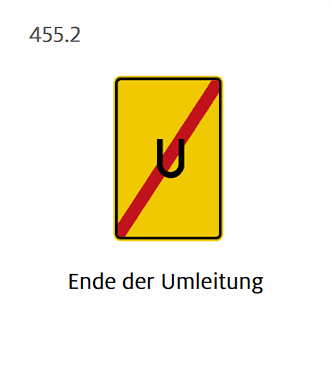
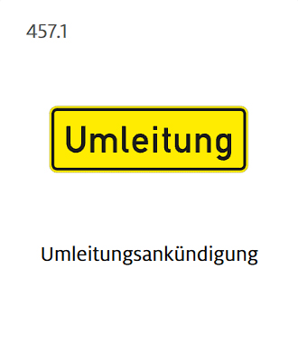
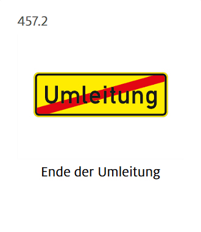
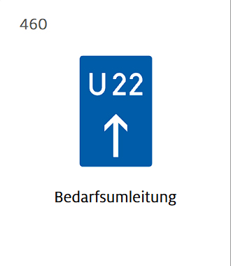
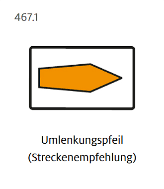
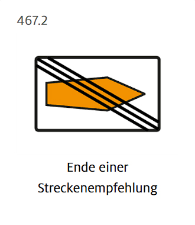
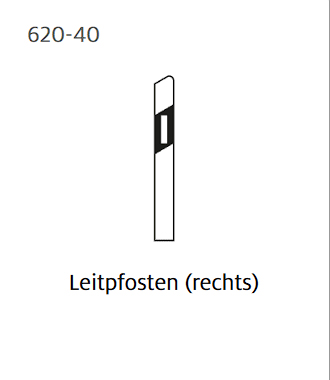
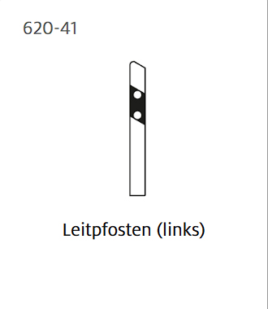
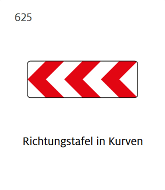
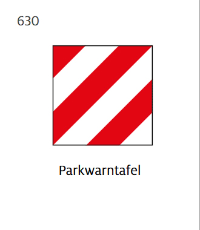
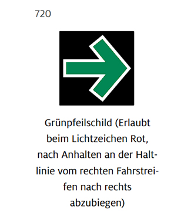
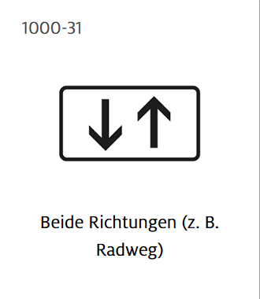
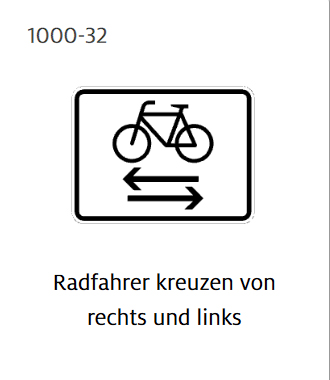
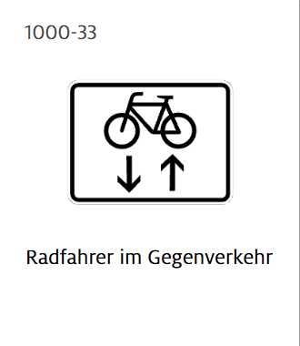
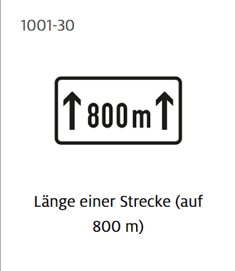
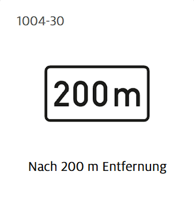
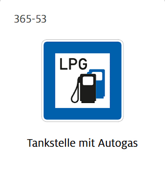
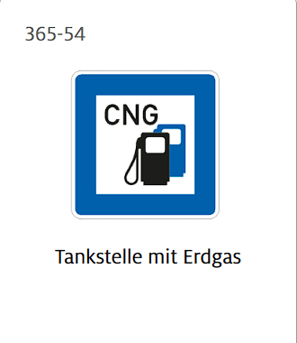
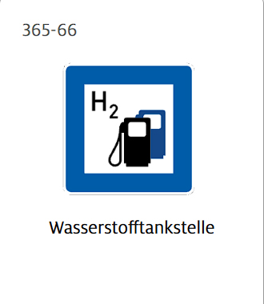
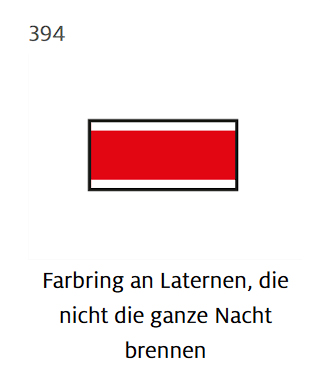
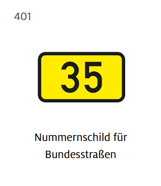
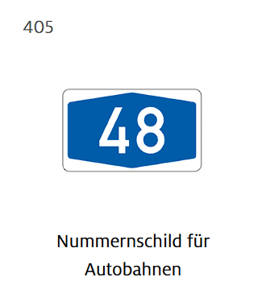
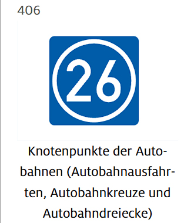
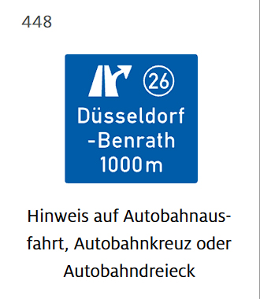
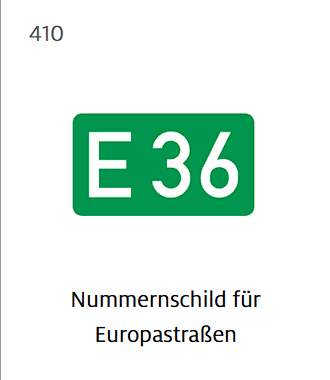
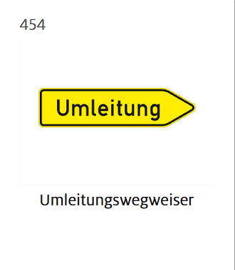
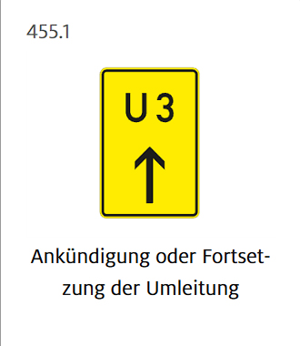
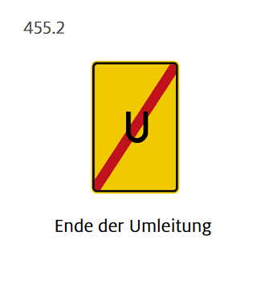
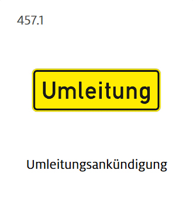
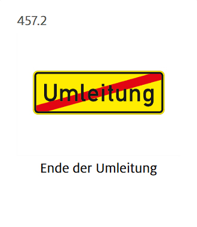
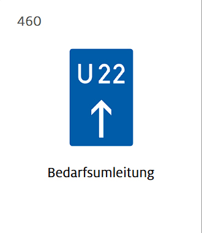
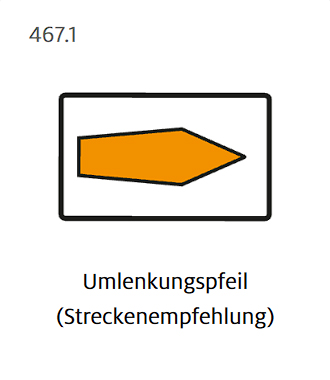
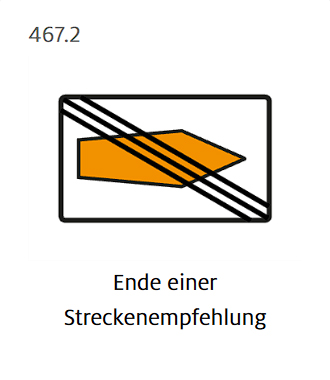
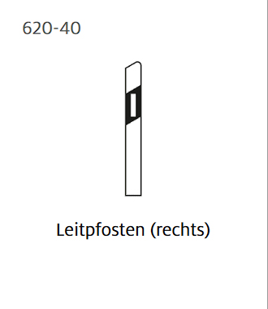
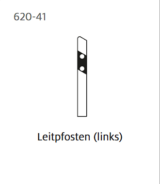
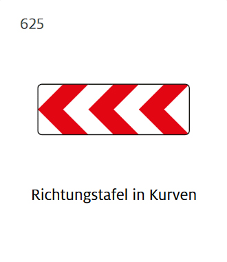
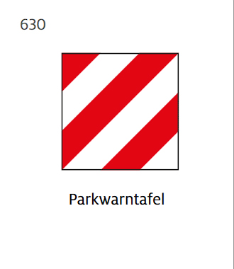
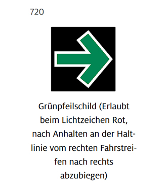
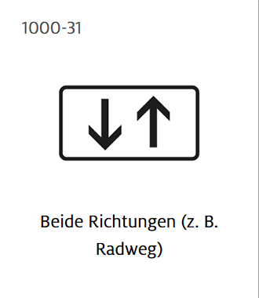
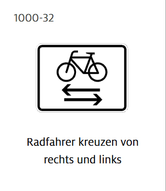
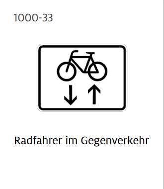
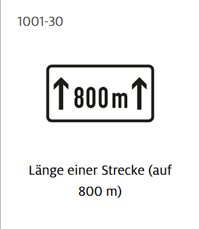
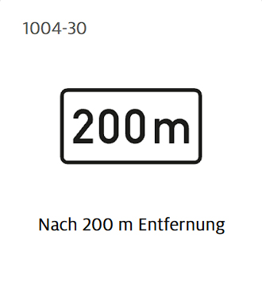
Vorfahrt
- rechts vor links (кроме всех исключений)
- пешеходов пропускать всегда!
- если пробка, то стоять на пешеходном переходе Нельзя!!!
- Если случайно встал на пешеходном переходе - немножко проехать вперед или назад, чтобы освободить немного места
- при пробках обязательно держать свободными перекрестки и Bahnübergang. Въезд на территорию необязательно
- светофор отменяет действие всех знаков приоритета (включая стоп)
- светофор и рядом с ним нарисованная зелёная стрелка - Всегда сначала останавливаться на хальтлинии!!! даже если нет знака стоп. Но также можно дождаться зелёный свет светофора
- если под нарисованной стрелкой стоит, что только велосипеды, то мне надо ждать зелёный свет, чтобы повернуть
- встречный транспорт пропускать только при повороте налево (типа я когда поверну налево, они у меня будут как бы помеха справа, т.е. типа надо пропустить)
- Если у меня positive Beschilderung, то у Querverkehr negative Beschilderung
- Такси не надо пропускать при отъезде от остановок
- у трамвая приоритет, если он едет с тобой в попутном направлении, и у него тоже зелёный
- если трамвай поворачивает направо (едет слева от тебя и поворачивает как бы наперерез), то у трамвая приоритет
- если мне надо повернуть налево, но слева от меня трамвай, которому надо прямо - мне надо пропустить трамвай
- акульи зубы - Wartepflicht. rechts vor links
- У трамвая если трусики - он так же ждет, как и все
- на автобане приоритет у машин на полосах с постоянным потоком (они не обязаны активно впускать меня с Einfädelungsstreifen)
- если обоим напротив друг друга надо налево, то первый едет тот, кто остаётся на Vorfahrtstrasse (если коленка), вторым едет тот, кто съезжает с главной
- если я поворачиваю направо, то перестраиваться надо на самую правую полосу
- если я поворачиваю налево, то обычно в "середину" - в полосу левее самой правой, но и не в самую левую (которая для гегенферкера)
- если я поворачиваю налево на улице с односторонним движением - перестраиваемся максимально влево
- если 2 машины на перекрестке напротив друг друга и обеим надо налево, разъезжаются, как правило, voreinander. Hintereinander - в исключительных случаях, если того требует разметка или транспортная обстановка
- Вопрос 1.1.07-149 (видео со стоящими на перекрестке машинами). Если велосипедистка сзади, а справа на перекрестке поворачивает налево красная машина - я должна ждать из-за красной машины (rechts vor links)
- Вопрос 1.1.07-148 (мой нелюбимый, похож на 149) - теперь велосипедистка слева, а не сзади. А слева зеленая машина, а не красная, и машина не поворачивает, а стоит ждет. Правильный ответ - я жду из-за велосипедистки (т.к. она может поехать, т.к. ей похуй)
- Вопрос 2.2.09-002 - перекресток посреди ебеней, обеим машинам надо налево, справа стоит велосипедистка, а за машиной мотоцикл. Ждем из-за мотоцикла, не из-за велосипедистки (она остановилась и ждет)
- Вопрос 1.4.42-010 - акульи зубы на перекрестке, красный фургон слева - надо осторожно подъезжать к перекрестку. Пропускать фургон или останавливаться не надо
- Вопрос 1.1.07-175 - еду по главной (коленка), перекресток, слева по главной черная машина хочет налево (т.е. съехать с главной). Я хочу направо (т.е. остаться на главной). Черная машина едет быстро, правильные ответы - мне придется отказаться от проиритета, черная машина повернет налево
- Вопрос 2.1.07-112 - еду по прямой улице с деревьями, вдалеке справа выезжает белая машина, которая не видит меня из-за деревьев - мне надо снизить скорость, тк машина меня плохо видит. Strassenverlauf этого не требует
Reißverschlussverfahren
- если стоит знак слияния 2х полос в одну (самая левая сливается в правую) - например, через 200 м из-за бауштелле
- если я еду в самой левой, а справа много машин, то заранее НЕ встраиваться вправо!
- ехать до упора в левой до конца, потом останавливаться и включать правый поворотник
- машины из правого ряда меня должны пропустить, чтобы я могла встроиться по веерному/зип-принципу - машина через одну. Одна едет из правого дальше, одна встраивается из левого
Parken und Halten
- Паркшайба - wird auf die nächste halbe Stunde nach der Ankunft eingestellt. Например, приехали в 16:05 - ставим на паркшайбе 16:30. 10:40 - ставим 11:00. Кладем на приборную панель (Armaturenbrett)
- Парковаться запрещено: на узких улицах напротив въезда/выезда на участок, на такси-остановках (там на такси знаке абсолютный хальтфербот)
- машины допустимой массы до 2,8 тонн и мотоциклы могут парковаться на спец обозначенных тротуарах
- на полосах со стрелками направления движения нельзя делать остановку (типа на 3 минуты)
- на стоянках такси нельзя делать остановку
- нельзя делать остановку на автобанах и Kraftfahrstresse вне парковочных мест, также возле курв
- парковаться по левую сторону по направлению движения можно на улицах с односторонним движением и там, где на правой стороне дороги рельсы
- на улице с односторонним движением можно парковаться в направлении моего движения на парковочных местах справа и слева
- Vorfahrtstrassen вне населенных пунктов - можно парковаться на обочине, можно делать остановку на правой обочине
- befestigte Seitenstreifen außerorts - halten, parken, mit langsameren Fahrzeugen fahren (Fahrräder, Mofas, landwirtschaftlich)
- паркшайба - если сломан парк автомат (Parkuhr) или предписано использовать шайбу на знаке
- Parkuhr если не до конца использовали время - можно использовать, не активируя Parkuhr заново
- Parkuhr сломанный - можно делать остановку для разгрузки/погрузки или высадки/посадки. За покупками нельзя
- прицеп без машины парковать - на спец парковках дольше 2х недель. Просто на улице - не больше 2х недель
- в населенных пунктах на неосвещенных улицах достаточно обозначить припаркованную машину парковочными огнями (Parklicht, Parkleuchten)
- при парковке вне городов включать Standlicht (4 габаритных огня)
- 3 метра - расстояние между моей машиной и разделительной полосой (при парковке на обочине)
- на Vorfahrtstrasse парковаться без обочины нельзя, даже если 3 метра остаётся между машиной и разделительной полосой (так можно парковаться только НЕ на Vorfahrtstrasse или в городе)
- над люками иногда нельзя парковаться, но делать остановку обычно можно
- парковаться на правой полосе движения типа можно, но если есть альтернатива для парковки, то нельзя (альтернатива для парковки - обочина справа или парковочная полоса справа)
- перед Bordsteinabsenkungen нельзя парковаться
- Dauerlichtzeichen - на этих полосах нельзя делать остановку
- хальтфербот с табличкой с зачеркнутой машиной на обочине - нельзя парковаться на обочине тоже
- прицеп с допустимой массой больше 2 тонн регулярно парковать по воскресеньям и праздничным дням с 22 до 6 - парковать в вонгебитах на специально обозначенных местах и в гевербегебитах
- Zick-Zack Linien - продлевают, укорачивают или обозначают парк- и хальтферботы. Нельзя делать остановку или парковаться
- Прямо ЗА зеброй парковаться можно. Перед зеброй (ближе, чем 5 метров) и на самой зебре - нельзя ни парковаться, ни делать остановку, ни стоять в пробке
- Haltverobt - vor Feuerwehrzufahrten. Не на всех Einbahnstrassen и необязательно в Parkverbotszonen
- Перед въездами/выездами на частную собственность можно делать отсановку, т.к. машина не покидается (т.е. можно всегда уехать)
- Если я еду в городе и хочу припарковаться на обочине справа, но передо мной машина уже собралась вставать на это место первая, у нее приоритет
Beleuchtung
- Abblendlicht днём, если обзор затруднён (туман, снегопад, дождь) - чтобы меня лчше было видно. Знаки НЕ помогает видеть на бОльшем расстоянии
- Abblendlicht в туннеле
- Bei Dunkelheit auf einer gut ausgebauten Landstrasse - должна мочь остановиться в пределах Abblendlicht
- Nebelschlussleuchte (задние противотуманки) - включать, если из-за тумана видимость меньше 50 метров. Из-за дождя не надо
- Nebelscheinwerfer (передние противотуманки) - дождь, туман, снег (если обзор затруднён)
- Fernlicht можно не выключать, если светит пешеходам в спину
- Fernlicht выключать, если еду по достаточно освещенной улице или надо ждать у Bahnübergang и я слеплю других (в т.ч. гегенферкер). Выключать, если передо мной близко едет машина, я могу слепить ее через зеркала
- Bremslicht не работает - лампочка или Sicherung
- при парковке вне городов включать Standlicht (4 габаритных огня)
- перед Bahnübergang жду в темноте - можно включить Standlicht, чтобы меня было видно, но никого не слепить
- Standlicht во время движения НЕ включаем
- Nebelschlussleute включены - жёлтая лампочка
- темно, еду по городу, водители на встречной предупреждают меня Lichthupe - либо я их слеплю, либо я забыла включить Abblendlicht
- в населенных пунктах на неосвещенных улицах достаточно обозначить припаркованную машину парковочными огнями (Parklicht)
- Leuchtweitenregelung (регулировка угла наклона фар) - если неправильно сделана, можно слепить гегенферкер или дальность света фар будет недостаточной
- Leuchtenträger mit allen hinteren Beleuchtungseinrichtungen - крепить обязательно, если мои задние огни не видно
- Warnblinklicht - пробка, Panne, буксирование
Verkehrspolizist
- типа зелёный - стоит боком ко мне, при этом руки в стороны - мне можно ехать
- если мне надо повернуть налево, я еду перед ним, не за ним
- рука вверх - типа жёлтый, ждать следующего сигнала, очистить перекресток (если кто-то уже там стоит)
- руки в стороны (стоит ко мне) - типа красный, ехать нельзя. Кверферкеру можно, он к ним боком
Anhänger
- 18 метров - макс длина комбинации из машины и прицепа
- Klasse B - Anhänger mit einer zulässigen Gesamtmasse über 750 kg, wenn die zulässige Gesamtmasse der Fahrzeugkombination 3.500 kg nicht überschreitet. Und bis 750 kg.
- pkw - можно только 1 прицеп!!! Lkw можно 2
- Stützlast для прицепа - мин 4% от общей массы. Das maximale Gewicht, das von oben auf die Anhängerkupplung wirken darf
- Maximale Stützlast (max vertical load) meines PKWs - в техпаспорте моей машины (Teil 1) и в Betriebsanleitung
- Zulässige Anhängerlast meines PKWs - Zulassungsbescheinigung Teil 1 meines PKWs
- При загрузке одноосевого прицепа обращать внимание на: Stützlast, Gesamtmasse, Achslast
- с Auflaufbremse - при долгом спуске с горы может перегреваться тормоз. В гору ничего не делает
- Auflaufbremse - перед отцеплением прицепа ставить его на ручник
- Auflaufbremse - при долгой езде вниз с горы может перегреваться тормоз прицепа. В гору бесполезен
- Прицеп с Auflaufbremse паркуем в Gefälle - ставим на ручник, перед колесами кладем Unterlegkeile
- прицеп с Auflaufbremse - тормозит после Zugfahrzeug, не одновременно и не до
- Stützrad не надо, чтобы катился во время поездки, он для поддержки при парковке, чтобы прицеп не заваливался
- доп зеркала ставить, если прицеп мешает обзору (независимо от размера и типа прицепа)
- доп зеркала для широких прицепов (шире 1,5 метров и выше 1 м) и так должны быть вмонтированы
- В прицепе нельзя перевозить людей
- езда по выбоинам с прицепом - не надо schnell gegenlenken
- Was kann die Fahrstabilität eines mitgeführten Anhängers beeinträchtigen? Ein weit hinten im Anhänger liegender Ladungsschwerpunkt, ein zu niedriger Reifenfülldruck der Anhängerreifen, ein undichter Stoßdämpfer
- Der undichte Stoßdämpfer an deinem Anhänger verliert seine Dämpfungseigenschaft, was zu einem unruhigen Fahrverhalten und zu schwer kontrollierbaren Gefahrensituationen führen kann.
- Перед поездкой с прицепом проверить: Anbringung des Abreiss-Bremsseils, Verriegelung der Verbindungseinrichtung, Funktion der Beleuchtungsanlage
- Приближаюсь с прицепом к курве на узкой Landstrasse (мокрая дорога) - еду в середине полосы и ускоряюсь после прохождения курвы. Снижаю скорость ДО курвы
- Дорога с выбоинами - снизить скорость. НЕ gegenlenken!
- Парковать прицеп с допустимой массой более 2 тонн в городе по воскресеньям и праздникам между 22:00 и 6:00 - можно в жилых районах на спец обозначенных парковочных местах и в Gewerbegebieten
Квадроциклы
- нужно носить мотоциклетную одежду
- рулить труднее, тк нет усилителя руля
- надо возить с собой треугольник
- на узкой курве могут опрокинуться
Manuelle Schaltung
- если едем в горку, включаем более низкую передачу, тк мало инерции. Холостой ход не включаем
- с горки вниз - тоже более низкую, чтобы можно было тормозить, а не катиться
- auskuppeln - отстыковаться, освободить сцепление (то есть нажать на педаль сцепления). Auskuppeln belastet die Bremse, die Bremswirkung des Motors wirkt nicht mehr
- если с горы вниз выжимать сцепление, изнашиваются тормоза, потому что приходится тормозить и невозможно использовать торможение двигателем (торможение двигателем - езда на более низкой передаче, чем нужно. Колеса хуже крутятся, двигатель снижает инерцию машины)
- на высоких передачах машина едет больше по инерции, типа разогналась (благоприятнее для окр среды)
- на низких - меньше по инерции, сильнее работает двигатель, больше число оборотов двигателя
- чтобы машина не скатилась с горы, включить первую или заднюю передачу(задний ход). Поднять ручник
- движение с горы с прицепом - нажатие на педаль сцепления НЕ снимает нагрузку с тормозоа, а наоборот увеличивает (при нажатии педали сцепления сцепление пропадает, т.е. колеса начинают вращаться ещё легче)
- Езда в пробке с шаговой скоростью - минимизирует износ сцепления езда на низкой передаче по возможности без задействования сцепления. Schleifende Kupplung повышает износ
Technical Issues
- оранжевые лампочки - я могу продолжать ехать на машине, могу сама доехать до мастерской
- красные лампочки - нельзя ехать, надо вызывать эвакуатор
- информация, когда следующий техосмотр (раз в 24 месяца) - на наклейке на задних номерах и по записи в тех паспорте
- Лампочка поворотника мигает чаще, чем обычно - поломан поворотник. Поломку поворотника можно определить по мигающей лампочке и перед началом поездки
- Не работает задний свет - Sicherung defekt, Leuchtmittel defekt
- при буксировании включать аварийку на обеих машинах, держать Abschleppseil moeglichst straff (натянутым)
- При буксировании расстояние между обеими машинами - не более 5 м
- Abschleppstange/Abschleppseil muss deutlich gekennzeichnet sein
- Мотоциклы вообще нельзя буксировать, их перевозят
- перед буксированием любой машины надо прочитать инструкцию от производителя, как правильно это делать. Моя категория позволяет буксировать
- при буксировании будет хуже крутится руль и хуже работать педаль тормоза(при повреждениях мотора не работает усилитель руля и усилитель тормоза). По возможности использовать абшлеппштангу. При буксировании может повредиться катализатор
- кручение руля на месте - могут появиться повреждения на поверхности шин и на передней оси
- Хуже крутится руль - надо немедленно в автомастерскую, не ездить дальше
- neue Hauptuntersuche - in 24 Monate
- не работает тормозной свет - постараюсь устранить проблему сам или ремонт в мастерской
- если тормоз сильнее работает в одну сторону - машина может вырываться в сторону. Тормозной путь удлиняется. Ausfall des ABS не будет
- Проверять тормоза - если Bremskontrollleuchte загорается во время поездки и если машина при торможении не держится в своей полосе
- поломка поворотника - он мигает чаще, чем обычно. Может мигать, если лампочку надо заменить, но НЕ Sicherung (если Sicherung, она вообще не горит)
- если руль "трепыхается" - может быть поврежден тормозной диск или несбалансирована шина. Надо проверить крепление передних колёс и передние колёса на предмет повреждений. Крепление руля ни при чем
- торможение двигателем - езда на более низкой передаче, чем нужно. Колеса хуже крутятся, двигатель снижает инерцию машины
- при езде по длинному сильному спуску не надо выжимать сцепление, иначе будет лишний износ тормозов, и нельзя будет делать торможение двигателем
- функции масла в двигателе внутреннего сгорания - защита от износа, охлаждение, очищение
- доливание моторного масла - не превышать максимальный уровень, использовать масло по указанию производителя. НЕ доливать при работающем моторе!
- использовать моторное масло по рекомендации производителя
- если горит лампочка, что низкое давление масла - лучше не ехать дальше, так можно повредить мотор. Проверить уровень масла, возможно, его слишком мало. Заглушить мотор
- как проверить уровень масла - измерить мерной палочкой. Некоторые машины могут показать на бортовом компьютере. Momentanverbrauchsanzeige - нету такого
- охлаждающая жидкость для мотора - если ее слишком мало, мотор перегревается, может повредиться. На расход бензина не влияет
- Если дворники плохо чистят стекло - щетки уже поюзанные, масляная пленка на стекле
- Если брызгается слишком мало моющей жидкости на стекло - дырки частично засорились, водный насос сломан
- Если моющая система не работает вообще - Sicherung defekt, дырки засорены, кончилась вода
- 1,6 мм - минимальная допустимая глубина профиля шин
- шины на передней оси неравномерно изношены - проверить Stoßdämpfer, Reifenfülldruck, Fahrwerkseinstellungen
- езда на зимних шинах летом увеличивает износ шин и расход топлива
- Значок в виде снежинки в горе на шине - зимняя резина (т.е. для снега тоже)
- давление в шинах проверять также регулярно при холодных шинах и после каждой смены шин. Давление в зимних шинах на 0,2 бар выше, чем в летних
- Давление регулярно проверять у запаски тоже!
- При сильной загрузке машины повысить давление по инструкции
- 1217 на шинах - 12я календарная неделя 2017 года
- При контроле давления в шинах учитывать Beladung и температуру шин (темпа выше сразу после езды)
- материал, из которого сделаны диски, не влияет на давление в шинах
- ограничение скорости зимней резины работает в любой сезон. Если машина может ехать быстрее, чем ограничение на зимней резине или всесезонной резине, на приборной панели должна быть наклейка
- домкрат только на точках, рекомендованных производителем
- если сильно въехал колесом в бордюр, лучше провериться в автомастерскую
- риск заноса в курве повышается, если - неправильное давление в шинах (сильно надуты - мало сцепления), поврежденное шасси, неправильная загрузка
- Если крепления колес не затянуты, может повредиться колесо или отсоединиться от машины. Диски не отвалятся
- Если этот значок горит - недавно меняли шины, слишком низкое давление в шине
- Менять колесо - Fahrzeug gegen Wegrollen sichern, Wagenheber ansetzen, Radmuttern loesen, Farhzeig anheben, Radmuttern herausdrehen (гайки открутить до того, как поднять машину, иначе на весу будет не открутить (колеса будут прокручиваться))
- Слишком низкое давление в шинах - ухудшаются стабильность в курвах, Lenkverhalten
- Если сильно въехать колесом в бордюр - шина может начать медленно терять воздух, Fahrverhalten может ухудшиться, надо в мастерскую
- катализатор - недосожженное топливо в катализаторе может нанести урон при заведении мотора
- если мотор заводится после нескольких неудачных попыток завести мотор, катализатор может повредиться
- Если предупореждение о слишком высокой температуре мотора - надо как можно быстрее в подходящем месте остановиться
- рециркуляция - это выключенный Lüftung (чтобы воздух извне не попадал в машину)
- Запотевшее ветровое стекло изнутри машины - надо включить кондей (осушить воздух) и направить воздух на стекло. Открывание окон поможет, только если снаружи влажность ниже, чем в машине
- заржавевшую выхлопную систему надо чинить, тк иначе шумит и детали могут упасть на дорогу. Мотор не перегревается
- тормозная жидкость - регулярно менять, чтобы не было слишком много водного компонента
- тормозная жидкость - регулярно менять, чтобы тормозная система исправно работала даже при сильной загрузке, и детали системы не повреждались (защищает детали тормозной системы)
- проба тормоза необходима при использовании чужой/другой машины и после того, как машина долго простаивала. После каждой замены моторного масла не надо
- Bremsweg зависит от поверзности дороги, шин и Bremsanlage
- Если педаль тормоза ненормально себя ведет - починить тормоз, не ехать дальше
- Fliehkraft в курве - в 4 раза выше, чем скорость
- задний привод - НЕ neigt zum Untersteuern , если резко затормозить в узкой курве
- если сигнал о том, что температура охлаждающей жидкости слишком высокая - грязный кулер, вышел из строя или протекает. Das Kühlsystem is undicht, der Kühler ist verschmutzt, der Kühlerlüfter ist ausgefallen
- Airbag Kontrollleuchte постоянно горит - надо в мастерскую. Переставать срочно пользоваться машиной не обязательно (правда, Airbag может не сработать)
- ручником во время езды не тормозить, он влияет на заднюю ось, машину может занести, если заблокируются задние колеса
- Bremsanlage überprüfen lassen - если при торможении выезжашь из полосы, или если загорелась лампочка во время поездки
- Если на PKW с передним приводом в курве слишком сильно ускориться - Vorderachse ausbrechen, Lenkfähigkeit eingeschränkt
- Если машину при торможении сильно ведет влево - дальше ехать только на низкой скорости и немедленно в Werkstatt
- Если машину при движении ведет вправо - проверю давление в шинах и при необходимости поеду в мастерскую. Наблюдать только за Lenkverhalten или сильно тормозить - неправильно
- Надо в мастерскую, если: не гаснет лампочка airbag, при езде по прямой надо постоянно gegenlenken, при торможении длительный шум, повреждения подвески, систмемы рулевого управления (хуже крутится руль)
- Автомат - при активации передачи для движения надо держать нажатой педаль тормоза, иначе машина поедет сразу
- Dachgepäckträger не шумит
- Скорость влияет на сопротивление воздуха больше всего
- Ottomotor - одноцилиндровый четырехактный двигатель внутреннего сгорания (изобретен Николаусом Отто)
- Kickdown - функция в автомате, активируется резким нажатием педали газа. Максимальное резкое ускорение (например, при обгоне)
Шины:
Safety and Emergency
- автобан ограничения по высоте машины - 4м, ширина - не более 2,55м
- На автобане нельзя поворачивать, делать остановку на обочине, ехать задним ходом
- Kraftfahrstrassen - wenden verboten
- Я приближаюсь к съезду с автобана, но еще НЕ на нем - замедляться рано! Но надо уже мигать и следить за едущими сзади
- Falschfahrer/Geisterfahrer - если вижу такого, помигать ему светом и побибикать, отъехать как можно правее, сообщить полиции
- Автобан если мало машин - по левой полосе можно ехать ровно до тех пор, пока делаю обгон сам или еду по ней за кем-то, кто обгоняет
- Перед поездкой проверяем, что все пристегнулись и обзор нигде не ограничен
- Ремень безопасности - нельзя толстую зимнюю куртку, продевать под обе руки, неполностью застегивать
- Wenden - auf Autobahnen und Kraftfahrstrassen verboten
- Мне можно заехжать ненадолго на велосипедную дорожку, если надо перестроиться или дать кому-то проехать. Шаговая скорость не обязательна
- выезжаем на дорогу через участок и через тротуар - если есть возможность, чтобы кто-то направлял/подсказывал
- technisch ungesicherte Bahnübergange - могут встречаться в портах и индустри гебитах, на улицах с низким трафиком и лесных дорогах
- если авария на ландштрассе - при необходимости предупреждать других водителей рукой
- Животное на дороге - приглушить свет, побибикать и затормозить. Не отклоняться влево, если есть гегенферкер
- Wildunfall - Unfallstelle absichern und Polizei verständnigen
- на ландштрассе ехать по обочине по возможности надо Мофам и сельскохозяйственным машинам (короче всем, кто едет до 30 км/ч)
- движение под прикрытием - если другая машина видит, что ты кого-то пропускаешь, может попытаться проскочить. Так делать обычно нельзя, но многие делают, надо быть готовой
- если не пристегнуться сзади, то для едущих спереди тоже опасность
- Kopfstütze НЕ улучшает Sitzposition. Верхний край должен быть примерно на одном уровне с головой
- черные стрелки на столбах - телефон
- Звонок во время езды - можно, если kurze Blickzuwendung и если не надо держать телефон в руках
- Navi - ввожим адрес, пока стоим. Не обслуживать во время езды. Использовать голос
- Если при езде задним ходом заблокирован обзор, надо остановиться, если больше не видно человека, который указывает, куда ехать (типа направляет)
- Quad - сложнее крутится руль, надо носить мотоциклетную одежду и с собой Warndreieck
- аквапланинг - НЕ тормозить, держать руль прямо. Снять ногу с педали газа
- бэби в люльке на пассажирском - отключить айрбэг, поставить люльку против направления движения, пристегнуть ребенка в люльке
- Kindersicherung не дает открыть машину изнутри (от воров не поможет)
- на стоянках для отдыха на автобане можно тоже получить срочную помощь
- при тумане время от времени включать дворники (чтобы убрать конденсат)
- гужевая повозка может иметь блинкеры и жезл, чтобы показывать изменение направления движения. Также кучер может показывать рукой
- Feuerwehr проинформировать, если масло разлито на дороге
- Брезентовый кузов (Planen) - нельзя, чтобы закрывал водителю задний обзор. Незагруженный прицеп с брезентом чувствителен к Seitenwind
- приехал если первый на место аварии - сначала absichern. Затем можно вызвать спасателей и оказать первую помощь
- Europäische Unfallbericht возить с собой - упрощает, если есть иностранцы среди участников аварии и делает возможным самостоятельное заполнение отчета
- Если едем мимо места аварии, которая еще НЕ отгорожена полицией - снизить скорость, ехать левее (если место аварии справа). Если полиция уже на месте и всё отгорожено - ехать дальше, не надо тормозить
- Если из моей машины упал груз или детали - самому их убрать, Gefahrstelle absichern oder Polizei verständnigen
- если лопнула на автобане шина, экстренное торможение не надо. Убрать ногу с педали газа, gegenlenken, встать на обочину на аварийку
- перед поворотом налево смотреть на едущие за мной машины 2 раза - 1 раз перед поворачиванием и 1 раз перед встраиванием
- мне можно ждать на рельсах (трамвайных, не ж/д). Но вообще по рельсам ездить опасно
- Pedelec тяжелый! Поэтому Hacktragesystem должен быть рассчитан на его вес, также Stützlast der Anhängerkupplung. Давление в шинах, возможно, надо будет подкорректировать
- Babys - Babyschalle. Kinder bis 12 Jahre und kleiner als 150cm - Kindersitz
- Rollstuhl - Rollstuhlstellplatz im Auto. Der Rollstuhl muss mit einem Rollstihl-Rückhaltesystem gesichert sein. Die Person muss mit einem Rollstuhlnutzer-Rückhaltesystem gesichert sein
- езда в колонне - смотреть вперёд через стекла и можно слегка сместиться вбок, не выезжая из своей полосы
- если сзади едет спасательная машина, мне надо дать дорогу, но сразу полностью останавливаться не обязательно
- синий свет у спасательной машины, но без звукового сигнала - прям свободный проезд не обязательно, но желательно и не препятствовать
- Rettungsgasse - в самой левой полосе ехать как можно левее, в средней или правой полосе ехать как можно правее


Legal Nuances
- для езды на машине нужна Haftpflichtversicherung
- Если истекла Haftpflichtversicherung - на этой машине больше нельзя ездить! Нужно abmelden bei der Zulassungsstelle - снять с учета
- С собой возить водительское удостоверение и Zulassungsbescheinigung Teil 1
- смена имени и адреса - надо уведомлять Zulassungsbehörde. По поводу смены страховки не надо
- На номерные знаки ничего не клеить и ничего не менять
- Hauptuntersuchung - каждые 2 года (24 мес)
- если я новый владелец машины, Hauptuntersuchung не обязательно, если она делалась недавно. Надо уведомить Zulassungsbehörde о смене владельца и о заключении Haftpflichtversicherung
- после технического изменения в машине была экспертиза - нужно заключение иметь при себе и по возможности сделать, чтобы изменения внесли в Teil 1
- Begutachtung после тех. изменения нужна сразу после изменения
- при аварии другим участникам по требованию предъявить водительское удостоверение и техпаспорт (Teil 1)
- если не прийти на семинар, могут отобрать права (не начислят доп пункты и не продлят испытательный срок)
- участие в семинаре НЕ убирает пункты
- Probezeit - 2 года
- Если во время Probezeit нарушить правила, могут начислить пункт и заставить пойти на Aufbauseminar для новичков
- во воскресеньям и праздничным дням запрещена служебная или коммерческая перевозка грузов - LKW с прицепом и LKW с допустимой обшей массой более 7,5 тонн
- PKW с прицепом можно ездить в коммерческих целях по воскресеньям и праздничным дням
- если техническое изменение машины делает разрешение на эксплуатацию недействительным, и я продолжаю ездить, грозит штраф, потеря страховки, пункты
- Alkoholverbot - für alle in der Probezeit und unter 21 Jahren
- Если запачкал улицу, я отвечаю за устранение
- Участие в незаконных гонках - могут быть аварии, лишение свободы, Entzug des Fahrerlaubnis
Umwelt. Kraftstoff sparen
- кондей и отопление сидений повышает сильно расход топлива
- Wertstoffhof, KFZ Werkstatt - там избавляться от Altöle, Schmierstoffe, Fahrzeugbatterien
- бывают шины с низким Rollgeräusch
- в Umwelt зоны НЕ нужна зелёная плашка всем 2х- и 3хколесным транспортным средствам (Krafträder), сельскохозяйственным и спасательным машинам
- Зеленую наклейку клеим с внутренней стороны на лобовое
- если заснежена машина, мотор не греть (типа неполезно для окружающей среды)
- Leichtlauföle, Leichtlaufreifen
- езда на зимних шинах летом увеличивает износ шин и расход топлива
- короткие поездки с холодным мотором - повышается расход топлива и износ материалов. НЕ перегружают батарею
- современные машины могут ехать 50 км/ч на 4 или 5 й передаче (меньше шума)
- Расход топлива повышают Dachgepackträger, Skihalter, Sitzheizung, Klimaanlage
- чекать давление в шинах, чтобы экономить топливо
- Участие в тренинге kraftstoffsparende Fahrweise (да, такое бывает :)
- Езда на электромобиле, Bildung von Fahrgemeinschaften
- Effizienzklasse, Emissionsklasse, Kraftstoffverbrauch при выборе машины
- Umweltschutz - Fahrgemeinschaften, oeffentliche Verkehrsmittel, mehrere Fahrziele in einer Fahrt zusammenlegen
- Экономить топливо на автомате - не использовать Kickdown, ездить в Эко-режиме
- Экономм топливо при перевозке багажа - кладем в багажник или за передние сиденья
- Меньше шума - езда на 4 и 5 передаче в городе
- Beim umweltbewussten Fahren hohe Geschwingidkeit vermieden werden (немцы не считают, что 130 км/ч - это быстро)
- Scharfes Anfahren избегать - иначе шум, износ шин. Hinterradbremse пофиг
Elektrofahrzeuge
- экстремальные внешние температуры влияют на дальность
- им тоже нужна Feinstaub-Plakette всё равно (у них на лбу не написано)
- снижение температуры увеличивает дальность
- использование высокого уровня рекуперации (возвращения энергии) увеличивает дальность
- рекуперация бережёт тормоза, т.к. ты тормозишь не тормозами, а мотором (индукцией моторов, которые создают электромагнитное сопротивление)
- торможение через рекуперацию снижается, если батарея заряжена на фул или при езде ниже рабочей температуры батареи (например, зимой)
- в случае аварии надо учитывать, что некоторые системы автомобиля под высоким напряжением (400-800 вольт)
- Гибриды (электро + двигатель внутр. сгорания) - для оптимизации расхода топлива надо регулярно заряжать батарею и пользоваться электро-приводом. Использовать только рекуперацию, чтобы заряжать батарею, недостаточно
- Die Ladedauer haengt vom Stromanschluss ab, зарядка только одобренными производителем кабелем
Assistenten
активировать вручную - AGR и активный парк ассистент
Ассистенты могут предупредить меня об опасности, помочь при выполнении водительских задач, в критических ситуациях автоматически вмешаться
Automatische Lichtsystem
- Abblendlicht включится автоматически только в темноте (т.е. в туман днём не сработает)
- Nebelscheinwerfer (передние противотуманки) НЕ включит сама
ABS/ABV (Antiblockiersystem/Blockierverhinderer)
- для кратчайшего тормозного пути жмём максимально сильно на тормозоа, прям ударно
- НЕ снижает риск опрокидывания при торможении в курвах
- позволяет колесам не блокироваться при торможении
- НЕ препятствует прокручиванию колёс beim Abfahren
- позволяет резко затормозить и одновременно отклониться (Lenkfähigkeit)
- мокрый асфальт и курва - машина всё равно может "выскользнуть" из курвы
- машина всё равно не остаётся всегда fahrstabil
- Lenkfähigkeit сохраняется дольше
- если тормоз сильнее работает на одну сторону, АБС пофигу
- на скользкой дороге обеспечивает наилучшее торможение
- Fahrdynamikregelung (ESC, Electronic Stability Control) ist eine Erweiterung des ABS und umfasst zusätzlich ASR (Antischlupfregelung), einen Bremsassistenten und eine elektronische Bremskraftverteilung
- Fahrdynamikregelung (ESC) - если долго горит, деактивирована или что-то не так. В нормальном состоянии не горит
Antriebs-Schlupf-Regelung (ASR)
- противобуксировочная система
- на скользкой дороге снижает вероятность скольжения колес в сторону
- снижает прокручивание колес (предотвращает потерю сцепления)
Spurhalte Assistent
- помогает при езде по прямой (не при поворотах и не при обгоне)
- оверрайдится поворотом руля в противоположную сторону или включением поворотника
- может плохо работать/не работать при сильных осадках и плохом освещении дороги, плохой разметке
- может не понять, что я преднамеренно покидаю полосу, если не включить поворотник (он может сигналить)
- Aktive Spurhalte Assistent (mit Lenkeingriff) может отображать в статусе, что он включен, выключен или есть Störung
- работает хорошо на автобанах, ландштрассе
- Если ассистент сигналит - я еду слишком близко к разметке. НЕ следит за расстоянием между машинами (за боковым тоже НЕ следит)
Spurwechsel-Assistent ohne Lenkeingriff
- предупреждает о столкновении с машиной на полосе левее моей
- НЕ тормозит мою машину
- НЕ выполняет самостоятельно перестройку в другую полосу
- Нужно наличие дорожной разметки
- Загорается лампочка в левом боковом зеркале - в поле обозрения есть какой-то транспорт, перестройку в левую полосу делать нельзя
Aktive Spurwechsel Assistent (mit Lenkeingriff)
- сам выполняет перестройку
- За Sicherheitsabstände НЕ следит сама
- Нужно наличие дорожной разметки
- Может осуществить перестройку в другую полосу, если нет транспорта в Sicherheitsbereich и ассистент распознал дорогу с несколькими полосами с хорошей разметкой
Abbiegeassistent
- может не заметить велосипед, если тот "закрыт" припаркованными машинами, повреждены или загрязнены сенсоры
Tempomat / AGR (Adaptive Geschwindigkeitsregelanlage)
- экономит энергию, поддерживает заданную скороть, entlastet den Fahrer bei der Fahrzeugbedienung
- не поддеривает расстояние между машинами
- может сам тормозить, если машина впереди слишком близко едет (слишком медленно, т.е. ориентируется на ее скорость, а не расстрояние)
- может сам ускоряться, чтобы разогнаться до нужной скорости
- сильный дождь или снегопад могут повлиять на работу системы
- нажатие на газ или тормоз перезаписывает/отменяет
- заданное расстояние НЕ поддерживает
- В курвах НЕ надо пользоваться, можно слишком быстро въехать в курву
- Если слишком поздно отключить, можно слишком плотно подъехать или нарушить скоростное ограничение
Notbremsassistent
- предупреждает о возможном столкновении
- снижает риск повреждений при неизбежном столкновении
Start Stop Automatik
- заглушает машину каждый раз, когда останавливаешься
- снижает уровень шума
- снижает расход топлива
Aktive Park Assistent
- распознает подходящие по размеру Parlkücken
- НЕ распознает все Hindernisse, надо всё равно следить за всем самому
- НЕ проверяет, можно ли в этом месте парковаться
Berganfahrhilfe Assistent
- мешает машине откатываться назад при езде в гору
- перенимает отпускание тормоза (ручника) при трогании с места при езде в гору
e-Call
- emergency call кнопка в машине
- Нажимать, если стал свидетелем тяжелой аварии или у пассажира медицинский Notfall
- Автоматически передает местоположение автомобиля и время аварии
Fernlichtassistent
- Включает сам Fernlicht, если надо
- В темноте гасит Fernlicht, если появляется Gegenverkehr
- Не сработает или сработает поздно при Gegenverkehr, если я еду по курве или по холму